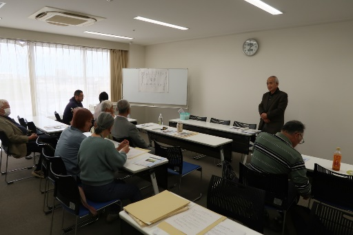
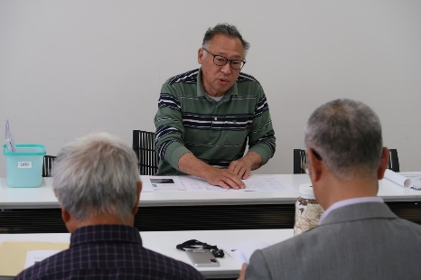
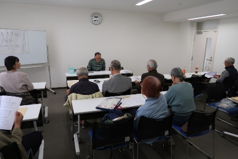
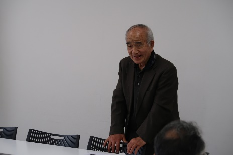

| 開催日 | 2026年5月24日(日) 14:00〜16:00 |
| 開催場所 | あげお富士住建ホール（上尾市文化センター）3階研修室 |
| 参加者 | 会員13名 |
| 世話人 | 事務局 栗原晴夫 |
| 報告者 | 栗原晴夫 |
| 撮影者 | 河野茂樹 |
| a |
5月24日(日)14時00分より、あげお富士住建ホール（上尾市文化センター）3階研修室にて第42回、2026年度定期総会が開催されました。
 
  《報告事項》 《決議事項》
その他、団体保険の継続契約、会誌37号の発行、会員相互のメーリングリストなどについて、説明、報告がありました。 《2026年度役員》 |